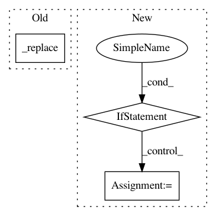

f1a59064acffbb19c9880a17f542be66a3c8afd1,models/official/efficientnet/efficientnet_model.py,Model,_build,#Model#,519
Before Change
output_filters = round_filters(block_args.output_filters,
self._global_params)
kernel_size = block_args.kernel_size
block_args = block_args._replace(
input_filters=input_filters,
output_filters=output_filters,
num_repeat=round_repeats(block_args.num_repeat, self._global_params))
// The first block needs to take care of stride and filter size increase.
conv_block = self._get_conv_block(block_args.conv_type)
if not block_args.super_pixel: // no super_pixel at all
After Change
output_filters = round_filters(block_args.output_filters,
self._global_params)
kernel_size = block_args.kernel_size
if self._fix_head_stem and (i == 0 or i == len(self._blocks_args) - 1):
repeats = block_args.num_repeat
else:
repeats = round_repeats(block_args.num_repeat, self._global_params)
block_args = block_args._replace(
input_filters=input_filters,
output_filters=output_filters,
num_repeat=repeats)
In pattern: SUPERPATTERN
Frequency: 3
Non-data size: 3
Instances
Project Name: tensorflow/tpu
Commit Name: f1a59064acffbb19c9880a17f542be66a3c8afd1
Time: 2020-02-24
Author: tanmingxing@google.com
File Name: models/official/efficientnet/efficientnet_model.py
Class Name: Model
Method Name: _build
Project Name: tensorflow/transform
Commit Name: ec9dcf7491c38f3531bfa718b496861ab19bb048
Time: 2019-08-28
Author: zoy@google.com
File Name: tensorflow_transform/analyzer_nodes.py
Class Name: _VocabularyAccumulatorCoder
Method Name: encode_cache
Project Name: stanford-mast/nn_dataflow
Commit Name: 7b9de034f66722286b586d96e691fa72bc5c968e
Time: 2017-05-30
Author: mgao12@stanford.edu
File Name: nn_dataflow/LoopBlockingScheme.py
Class Name: LoopBlockingScheme
Method Name: verify_fetch